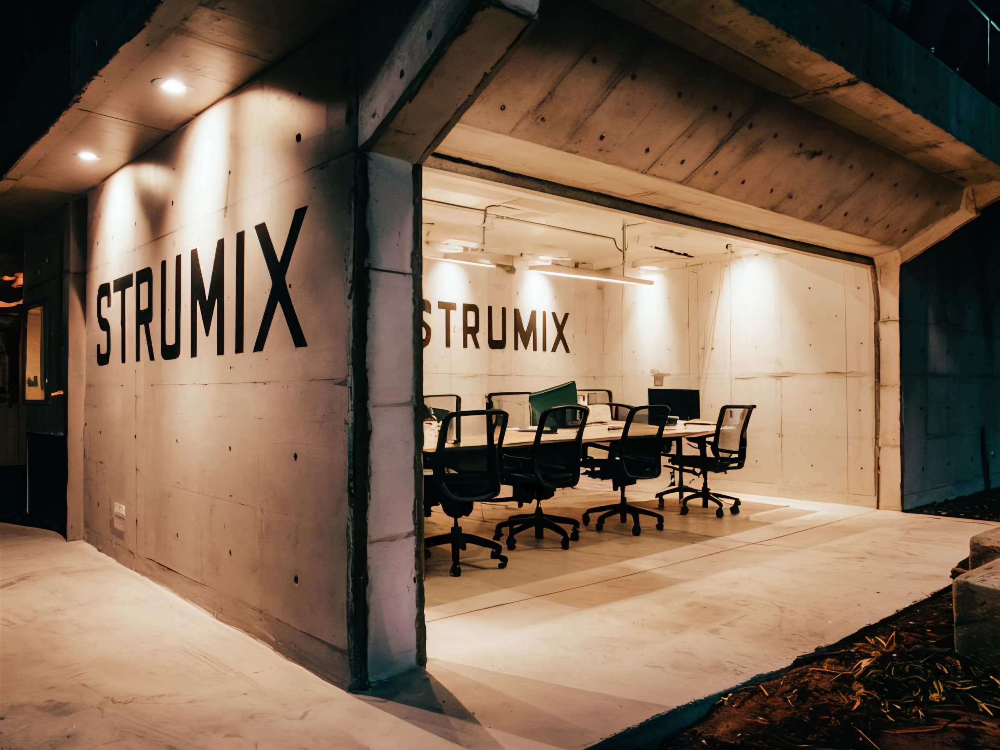

میکروسیلیس و استفاده های آن در صنعت بتن
ایجاد ارتباط مناسب بین فاکتورها و ویژگی های مختلف بتن، باعث آسانی در طراحی بتن مورد نظر می شود. استفاده از بتن های با مقاومت بالا در نقاط مختلف جهان افزایش چشمگیری داشته است. مواد افزودنی بتن متفاوتی برای بالا بردن خواص فیزیکی و مکانیکی بتن به کار برده می شوند. هم اکنون میکروسیلیس به عنوان یکی از بهترین مواد افزودنی معدنی و به عبارت دیگر یک پوزولان موثر است که در صورت کاربرد درست از آن، تأثیر چشمگیری در افزایش مقاومت و دوام سازه های بتنی دارد. میکروسیلیس یا دوده سیلیسی، ماده ی سیلیسی ریزی است که ذرات آن 40 تا 100 برابر از ذرات سیمان کوچکتر بوده و باعث چسبندگی ذرات بین سیمان می شود. این ماده به عنوان ماده پرکننده ی اجزای تشکیل دهنده ی بتن عمل می کند و چسبندگی بین سیمان و سنگدانه را تا حد زیادی افزایش می دهد. دوده سیلیسی، ماده ای بسیار نرم و به شکل پودر می باشد و حاوی مواد آمورف با قطرهای بین 0.2 تا 0.5 میکرومتر است. میزان سیلیس در این ماده معمولا مقداری بین 85 تا 98 درصد است که میزان دقیق آن بستگی به کارخانه ی فروسیلیس دارد.. افزایش مقاومت تدریجی با توجه به تداوم آبگیری سیمان وکاهش میزان تخلخل بین مواد در مرحله ایجاد چسبندگی مایجاد می شود. میکروسیلیس موجود در بتن که به عنوان یک ماده پوزولانی، با هیدروکسیدکلسیم ناشی از هیدراتاسیون سیمان ترکیب شده و ترکیبی ژل مانند می سازد. این ترکیب، عامل اصلی افزایش مقاومت و کاهش تخلخل ذرات تشکیل دهنده بتن می باشد. کریستال های بزرگ هیدروکسیدکلسیم در سطح سنگدانه و خمیر، مانع افزایش مقاومت می شود که میکروسیلیس با واکنش پوزولانی با هیدروکسید کلسیم آن را به اجزاء مقاومی به نام سیلیکات کلسیم هیدراته تبدیل می کند و بدین ترتیب باعث افزایش مقاومت فشاری بتن می شود.
در بازار شیمی ساختمان، میکروسیلیس به سه شکل ژل میکروسیلس بتن، دوغاب میکروسیلیس بتن و پودر خشک یافت می شود که هر شکل دارای مزایا و معایب خود است.
از اختلاط آب و پودر میکروسیلیس و فوق روان کننده بتن یا ابر روان کننده بتن بدست می آید و حاوی 45 الی 50 درصد میکروسیلیس می باشد و نسبت به دوغاب، میکروسیلیس کمتری دارد.
میکروسیلیس با آب مخلوط شده و مخلوط های % 60-45 میکروسیلیس در آب تهیه می شود که نسبت به ژل میکروسیلیس بتن حاوی مقدار بیشتر پودر میکروسیلیس می باشد. دوغاب میکروسیلس % ۵۰ میکروسیلیس در آب دارای دانسیته g/ml 1.4 است. این دانسیته نسبت به شکل پودری میکروسیلیس که دانسیته حدود g/ml 0.3 دارد تقریبا 4.5 برابر است. بنا بر این حمل آن نیز آسانتر است. شرکت STRUMIX انواع دوغاب میکروسیلیس شامل فوق روان کننده یا بدون خاصیت روانی را تولید می کند. از آنجا که پودر میکروسیلیس ریز ساختار بوده، سطح موثر بالایی دارد و مقدار زیادی از آب بتن را جذب سطح می کند و استفاده از میکروسیلیس در بتن، نیاز به آب را بیشتر می کند که باید با افزودنی های کاهنده آن نیاز را جبران کرد. دوغاب میکروسیلیس به دلیل روانی بیشتر نسبت به ژل توانایی پخش شدگی بیشتری نسبت به ژل دارد.
این شکل میکروسیلیس ساختار پودر نرم دارد. نرمی بسیار زیاد میکروسیلیس باعث ایجاد مشکلاتی در حمل و نقل این محصول می شود. گرفتگی تاسیسات و لوله های انتقالی، چسبندگی به سطوح و تشکیل پل در مخازن نگهداری از مشکلات این شکل از میکروسیلیس می باشد. پودر خشک تازه تولید شده با مکانیسم هایی متراکم شده و سپس عرضه می شود و افزودن مستقیم پودر سبک به بتن رایج نمی باشد. هزینه های زیاد مربوط به حمل و نقل و ایجاد گرد و خاک زیاد دو عامل اصلی این کار می باشد. پودر میکروسیلیس باید با استاندارد ASTM C1204 مورد بررسی قرار گیرد.


بهترین مطالب هر ما
ارسال میشه به صندوق پستی شما!
این بالا کلیک کن و ایمیلت رو بنویس
ثبت